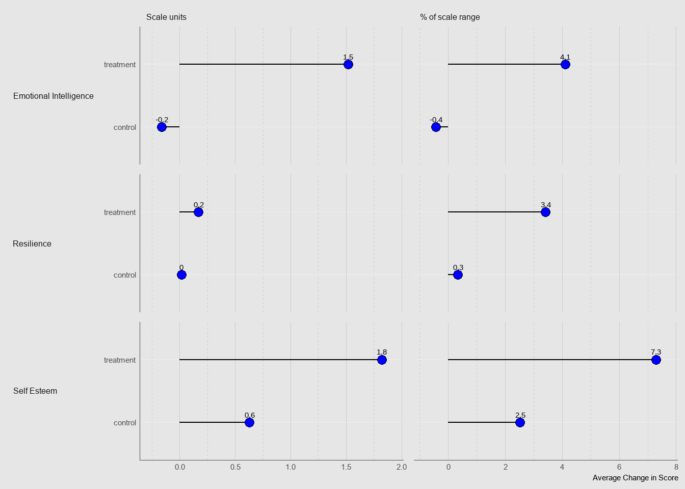
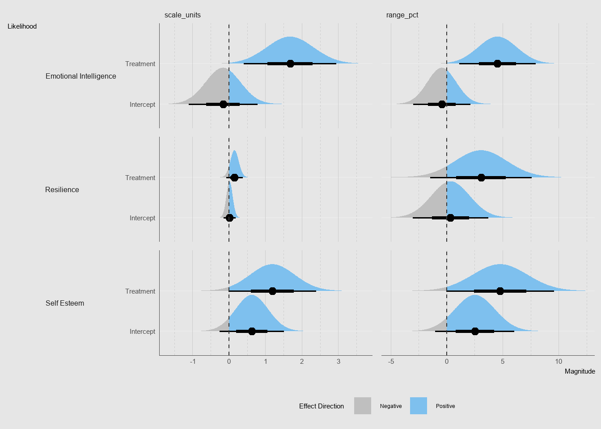

This chapter is currently under active development. Use its content as it is helpful, but please moderate your expectations. If you’re interested in helping out with its development, head over to the repo
10.1 Communicating Uncertainty
Communicating uncertainty is a challenge that we face when our analysis has used statistical methods to estimate the value of a coefficient. It is difficult to effectively represent uncertainty, either as a quantity or a feature of a visualization, such that readers will come away from the analysis with an understanding and a level of confidence that matches our own. It is also difficult to make meaning of uncertainty in the broader context of an analysis project, whether it be a program evaluation, a piece of policy analysis, or any other project that we might take on. However, there is a growing body of research on how to effectively communicate uncertainty, and we can use this research to guide our own efforts.
Across the sciences, communicating uncertainty is not a solved problem. This is especially true in the social sciences, where the methods we use to quantify uncertainty are often not well understood by our readers. Blueprint is specifically positioned to take a leadership role in the innovation and adoption of better practices. If you’re doing this kind of work and it feels difficult, confusing, or frustrating, that’s because it is! We encourage you to lean into that discomfort and take your time figuring out what is going to work best for your project.
10.1.1 Example Results: CCDF / IMM+ effects on pre-employability skills
The example results are from a program evaluation of an FSC-funded randomized controlled trial of a pre-employability training program for adults on social assistance. They are estimates of the effect of the program on emotional intelligence, self-esteem, and resilience.
IMM+ is a pre-employability training program that is designed to bring adults on social assistance closer to the labour market. Over the course of the program, participants undertake a series of workshops and activities that are designed to improve their self-esteem, resilience, and emotional intelligence. IMM+’s theory of change holds that these three “pre-employability skills” form a critical foundation for success in the labour market.
If the program successfully boosts these skills and the theory of change is correct then we should see an increase in the number of participants who eventually find and sustain employment after completing the program. Once longer term outcomes are available, we will be able to interrogate this theory of change more directly, but for now, we can look at the effect of the program on these three skills as a necessary intermediate outcome that must be achieved in order for the program to be successful. Our analysis of these outcomes will remain valuable, by enriching our understanding of the mechanisms by which the program achieves its impacts on employment.
10.1.1.2 What did we measure, and how does it relate?
Unlike employment, retention, or earnings, these outcomes are not directly observable. Instead of measuring them directly, we rely on a survey instrument that is designed to measure the underlying constructs of self-esteem, resilience, and emotional intelligence. In selecting and adapting individual psychometric scales to use in the survey, we attempted to balance the need for a comprehensive assessment of each construct with the need to keep the survey short and accessible to participants. The survey was administered to both treatment and control group participants at the beginning and end of each cohort to capture the change in each construct over the course of the program.
10.1.1.2.1 Resilience
To measure resilience, we used the full Brief Resilience Scale, a 6-item scale that asks participants to rate their agreement with statements like “I tend to bounce back quickly after hard times” and “I tend to lose hope easily”. Together, responses produce a score between 1 (low resilience) and 5 (high resilience).
The authors provide three categories for interpreting scores: low (1.00-2.99), medium (3.00-4.30), and high (4.31-5.00). With this framing in mind, a single point increase in an individual’s score has different meanings depending on their starting point. However, the range of the scale suggests that a 1-point increase represents a meaningful change in an individual’s degree of resilience.
Resilience is a big concept, with many possible senses in many possible situations. The authors of the Brief Resilience Scale define resilience as “the ability to bounce back or recover from stress”. This definition is consistent with the way that we use the term in the context of the IMM+ program, where we are interested in the ability of participants to recover from the stress inherent to the process of finding and sustaining employment.
10.1.1.2.2 Self-Esteem
To measure self-esteem, we used an adaptation of the Rosenberg Self-Esteem Scale, from whose original 10 items we selected 6 that we felt would be most relevant in the context of the program. The resulting scale produces score that range from 6 to 30, with higher scores indicating higher self-esteem.
IMM+ has shown promising results in previous evaluations, and has received strong anecdotal feedback from its participants. Participants and practioners think it works, and we expect that to born out in the data. However, we also know that each of these traits is as much a part of an individual’s personality as it is a skill that can be quickly learned and developed. We expect that the program will have a positive effect on these traits, but we do not expect the magnitude of that effect to be dramatic. Rather than a sudden change in the distribution of scores, we expect to see a shift in the mean score of the treatment group relative to the control group.
10.1.1.4 What did we see?
The chart below presents the average changes we observed in two ways. In the left column, the average change is measured as a percentage of the size of the scale’s range. These units are not directly comparable across outcomes, but they let us discuss the change in terms of the scale’s definition. On the right, the average change as a proportion of the scale range. These figures let us compare changes across outcomes, but they are less intuitive than the scale units.
dplt_01<-d|>select(outcome, coefficient, estimate)|>pivot_wider(names_from =coefficient, values_from =estimate)|>rename( treatment_effect =`Treatment`, control =`Intercept`)|>mutate( treatment =treatment_effect+control, scale_range =case_when(outcome=="Self Esteem"~30-5,outcome=="Resilience"~5-0,outcome=="Emotional Intelligence"~45-8))|>pivot_longer( cols =c(control, treatment), names_to ="group", values_to ="Scale units")|>mutate( `% of scale range` =`Scale units`/scale_range*100)|>pivot_longer( cols =c(`Scale units`, `% of scale range`), names_to ="transformation", values_to ="observed_change")|>mutate( transformation =fct_inorder(transformation))dplt_01|>ggplot(aes(y =group, x =observed_change))+facet_grid(rows =vars(outcome), cols =vars(transformation), scales ="free_x", switch ="y")+geom_segment(aes(xend =0, yend =after_stat(y)))+geom_point(shape =21, size =3, fill ="#0000FF")+geom_text(aes(label =round(observed_change, 1)), position =position_nudge(y =.12))+scale_x_continuous( expand =expansion(mult =c(.1, .1)))+labs( x ="Average Change in Score", y =NULL)+bptheme::theme_blueprint(grid ="Xxy", grid_col ="grey80")+theme(strip.placement ="outside")

The treatment group’s average scores increased slightly on each of the three scales. This is consistent with our expectations, in that – compared to where they started – participants are likely to leave the program with incremental, rather than transformational improvements in these skills. Even the treatment group’s largest observed change, a 1.8 scale point (7.3 % of the scale’s range) increase in self-esteem, wouldn’t represent a change from a person with low self-esteem to a person with high self-esteem.
The control group’s average resilience and emotional intelligence scores remained roughly the same, each moving by less than 1% of the scale’s range. In contrast, the average self-esteem score in the control group increased .6 points (2.5% of the scale’s range) from baseline to exit. What could explain that increase? We know that the change is not due to the program, because the control group did not participate in the program. We know that the same members of the control group completed the baseline and exit surveys, so the observed change is not due to differences in the sample.
This leaves us with three plausible explanations: (1) either the change is due to chance (the control group sought out or experienced events that, on the whole, increased their self-esteem), (2) the change is due to the survey instrument itself (the survey instrument is not perfectly reliable, and the observed change is due to random variation in the instrument), or (3) an individual’s decision to enroll in IMM+ is associated with an unusually low level of self-esteem (the control group’s average self-esteem score is unusually low, and the observed change is due to regression to the mean).
10.1.1.5 What does it mean about CCDF’s model in general?
The observed changes described above tell us with certainty that the treatment group experienced improvements across the three measured pre-employability skills, and that, on average, their improvements were larger than those experienced by the control group. However, they don’t tell us what we really want to know: whether and to what extent the program should be expected to improve future participants’ pre-employability skills.
The chart below presents our estimates of the intercept (average change in the control group) and the treatment effect (the additional average change in the treatment group), along with distributions that represent our uncertainty about those estimates. The chart below is structured similarly to the chart above, but with two key differences: first, instead of presenting the total change experienced by the treatment group, we present the treatment effect (the additional change experienced by the treatment group relative to the control group); second, instead of indicating what happened to the average participant, we indicate (with the shaded distributions) the extent to which we are uncertain about the true treatment effect.
dplt_02<-d|>mutate( scale_range =case_when(outcome=="Self Esteem"~30-5,outcome=="Resilience"~5-0,outcome=="Emotional Intelligence"~45-8), estimate__range_pct =estimate/scale_range*100, std_error__range_pct =std_error/scale_range*100)|>rename( estimate__scale_units =estimate, std_error__scale_units =std_error)|>pivot_longer( cols =matches("estimate|std_error"), names_to =c(".value", "transformation"), names_pattern ="(.*)__(.*)")|>mutate( transformation =fct_inorder(transformation))dplt_02|>ggplot(aes(y =coefficient))+facet_grid(rows =vars(outcome), cols =vars(transformation), switch ="y", scales ="free_x")+stat_halfeye(aes( xdist =dist_normal(estimate, std_error), fill =after_stat(x>0)), normalize ="panels")+geom_text(aes( label =glue::glue("p = {round(p, 2)}")), x =0, hjust =1.1, position =position_nudge(x =-.1, y =.12),)+geom_vline(xintercept =0, color ="grey20", lty =2)+scale_fill_manual( values =c("grey75", "skyblue2"), name ="Effect Direction", breaks =c(FALSE, TRUE), labels =c("Negative","Positive"), guide =guide_legend())+labs( x ="Magnitude", y ="Likelihood")+bptheme::theme_blueprint(grid ="Xxy", grid_col ="grey80")+theme(strip.placement ="outside")

Overall, we can say with confidence that the program probably had a positive effect on each of the three pre-employability skills we measured, and that it almost definitely had a positive effect on emotional intelligence.